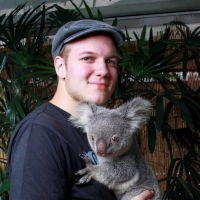

Julien Devevey's Homepage
About me
I am a cryptography expert at ANSSI, the French cybersecurity agency.
Before that, I was a PhD student at École Normale Supérieure de Lyon under the supervision of
Damien Stehlé and a member of the AriC team at the LIP laboratory.
I am mainly interested in lattice-based cryptography, in particular everything about lattice-based Fiat-Shamir signatures: efficient implementations, optimisations and applications to advanced protocols.
I participated in the HAETAE project, a Korean post-quantum signature standard. We also submitted it to the 1st additional signature round of NIST PQC.
Contact: [firstname] dot [lastname] at ssi dot gouv dot fr
Publications
2026
- ML-DSA masking sweetened with SUCRE: Shuffle-and-Unmask Countermeasure for REjection sampling
with Sonia Belaïd, Ryad Benadjila, Morgane Guerreau, Thomas Legavre, Ange Martinelli, Thomas Ricosset, Matthieu Rivan and Mélissa Rossi.
IACR Transactions on Cryptographic Hardware and Embedded Systems, 2026(1), 618-659. https://doi.org/10.46586/tches.v2026.i1.618-659.
- Compact, Efficient and Non-separable Hybrid Signatures [pdf] [slides]
with Morgane Guerreau and Maxime Roméas.
Post-Quantum Cryptography. PQCrypto 2026. Lecture Notes in Computer Science, vol 16492. Springer, Cham. https://doi.org/10.1007/978-3-032-22698-3_5.
2025
- Breaking HUFU with 0 Leakage: A Side-Channel Analysis [pdf] [slides]
with Morgane Guerreau, Thomas Legavre, Ange Martinelli and Thomas Ricosset.
Constructive Approaches for Security Analysis and Design of Embedded Systems: First International Conference, CASCADE 2025, Saint-Etienne, France, April 2-4, 2025, Proceedings. Pages 93 - 116. https://doi.org/10.1007/978-3-032-01405-4_5
2024
- HAETAE: Shorter Lattice-Based Fiat-Shamir Signatures [pdf] [slides] [video]
with Jung Hee Cheon, Hyeongmin Choe, Tim Güneysu, Dongyeon Hong, Markus Krausz, Georg Land, Marc Möller, Damien Stehlé and Minjune Yi.
Submission Specification and IACR Transactions on Cryptographic Hardware and Embedded Systems, 2024(3), 25-75. https://doi.org/10.46586/tches.v2024.i3.25-75.
2023
- G+G: A Fiat-Shamir Lattice Signature Based on Convolved Gaussians [pdf] [slides] [video]
with Alain Passelègue and Damien Stehlé.
Advances in Cryptology — ASIACRYPT 2023. ASIACRYPT 2023. Lecture Notes in Computer Science, vol 14444. Springer, Cham. https://doi.org/10.1007/978-981-99-8739-9_2
- A Detailed Analysis of Fiat-Shamir with Aborts [pdf] [slides] [video]
with Pouria Fallahpour, Alain Passelègue and Damien Stehlé.
Advances in Cryptology — CRYPTO 2023. CRYPTO 2023. Lecture Notes in Computer Science, vol 14085. Springer, Cham. https://doi.org/10.1007/978-3-031-38554-4_11
2022
- On Rejection Sampling in Lyubashevsky's Signature Scheme [pdf] [slides] [video]
with Omar Fawzi, Alain Passelègue and Damien Stehlé.
Advances in Cryptology — ASIACRYPT 2022. ASIACRYPT 2022. Lecture Notes in Computer Science, vol 13794. Springer, Cham. https://doi.org/10.1007/978-3-031-22972-5_2
- Rational Modular Encoding in the DCR Setting: Non-Interactive Range Proofs and Paillier-Based Naor-Yung in the Standard Model | [pdf] [slides] [video]
with Benoît Libert and Thomas Peters.
Public-Key Cryptography — PKC 2022. PKC 2022. Lecture Notes in Computer Science, vol 13177. Springer, Cham. https://doi.org/10.1007/978-3-030-97121-2_22
2021
- Non-Interactive CCA2-Secure Threshold Cryptosystems: Achieving Adaptive Security in the Standard Model Without Pairings | [pdf] [slides] [video]
with Benoît Libert, Khoa Nguyen, Thomas Peters and Moti Yung.
Public-Key Cryptography — PKC 2021. PKC 2021. Lecture Notes in Computer Science, vol 12710. Springer, Cham. https://doi.org/10.1007/978-3-030-75245-3_24
- On the Integer Polynomial Learning with Errors Problem | [pdf] [slides] [video]
with Amin Sakzad, Damien Stehlé and Ron Steinfeld.
Public-Key Cryptography — PKC 2021. PKC 2021. Lecture Notes in Computer Science, vol 12710. Springer, Cham. https://doi.org/10.1007/978-3-030-75245-3_8
Talks
2024
- G+G: A Fiat-Shamir Lattice Signature Based on Convolved Gaussians | [slides]
Séminaire C2, INRIA Paris.
- HAETAE: Short Fiat-Shamir with Aborts Signature | [slides]
Séminaire de Cryptographie — Rennes.
2023
- G+G: A Fiat-Shamir Lattice Signature Based on Convolved Gaussians | [slides]
Journées Codage et Cryptographie — Najac.
- Lattice-based Signature Schemes in the Fiat-Shamir Paradigm | [slides]
PhD Defense — ENS de Lyon.
- HAETAE: Shorter Fiat-Shamir with Aborts Signatures | [slides] [video]
2nd Post-Quantum Cryptography Summit — Oxford.
2022
- On Rejection Sampling in Lyubashevsky's Signature Scheme | [slides]
Séminaire de Cryptographie — Rennes.
- On Rejection Sampling in Lyubashevsky's Signature Scheme | [slides]
Journées Codage et Cryptographie — Hendaye.
2021
- Non-Interactive CCA2-Secure Threshold Cryptosystems: Achieving Adaptive Security in the Standard Model Without Pairings | [slides]
IMDEA Crypto Reading Group — Virtual.
Teaching
- 2022-2023 Teaching assistant, Préparation à l'agrégation d'informatique, ENS de Lyon. Entraînement à l'épreuve de leçon.
- 2022-2023 Teaching assistant, LIFSE: Systems, Université Lyon I (Bachelor 2), with Nicolas Louvet.
- 2021-2022 Teaching assistant, LIFASR5: Systems, Université Lyon I (Bachelor 2), with Nicolas Louvet.
- 2021-2022 Teaching assistant, Computer Algebra, ENS de Lyon (Master 1), with Bruno Salvy.
- 2021-2022 Teaching assistant, Cryptography and Security, ENS de Lyon (Master 1), with Alain Passelègue.
- 2020-2021 Teaching assistant, Computer Algebra, ENS de Lyon (Master 1), with Pascal Koiran.
- 2020-2021 Teaching assistant, Cryptography and Security, ENS de Lyon (Master 1), with Damien Stehlé.